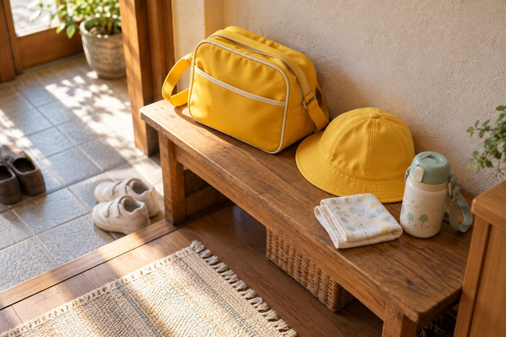

慣らし保育は「早く慣れるための試験」ではない
慣らし保育は、通常より短い保育時間から始め、子どもが家族と離れること、園の環境、先生や友だち、食事や午睡などに少しずつ慣れていくための期間です。保護者にとっても、登園準備や送迎、子どもと離れる生活に慣れる時間になります。
「何日で通常保育になったか」を合格ラインのように考えると、予定が延びたときに焦りやすくなります。実際には、園の方針、年齢、これまでの生活、食事や睡眠の様子によって進み方が変わります。最初に示された予定表は見通しを立てるための目安として受け取り、その日の様子を園と共有しながら進めるのが現実的です。
慣らし保育の進み方は、時間より「園で経験すること」が増えていく
慣らし保育では、単に滞在時間を一時間ずつ延ばすとは限りません。園で過ごす場面を段階的に増やしていく例が多く見られます。
| 段階の一例 | 園で経験すること | 家庭で確認したいこと |
|---|---|---|
| 短時間 | 登園し、保育室や先生と過ごしてお迎え | 帰宅後の疲れ、食欲、機嫌 |
| 昼食前まで | 午前の遊びや水分補給まで | 園で水分を取れたか、安心できる場面があったか |
| 昼食後まで | 園で食事をする | 食べられた量、食具や食べ方で伝えること |
| 午睡後まで | 園で眠り、起きてからお迎え | 寝つき方、睡眠時間、帰宅後の様子 |
| 通常の保育時間へ | 家庭の利用時間に近い一日を過ごす | 朝の支度から夜の就寝まで無理がないか |
これは一般的な流れを整理した例で、すべての園が同じ日程で進めるわけではありません。何日目にどの段階へ進むか、土日や欠席を挟んだ場合にどうするかは、入園する園へ確認してください。

子ども目線に立つと、「今日も頑張っている」が見えてきた
慣らし保育が思ったように進まないと、「復帰日に間に合うかな」「どうしてまだ泣くんだろう」と、つい大人の予定を中心に考えてしまいます。私にも焦る気持ちがありました。
でも、ふと子ども目線に立ってみると、子どもも知らない場所で精いっぱい頑張っているんだなと思えました。
そう考えると、予定より一段階遅い日も「できなかった日」ではなく、今日の分を頑張った日として見られるようになり、私も前を向けました。
登園時に泣いていても、先生に抱かれて少し落ち着けた、好きなおもちゃに手を伸ばした、水分を一口飲めた。大人から見ると小さな変化でも、子どもにとっては新しい場所で経験を重ねた一歩です。お迎えのときに、できなかったことだけでなく、安心できた瞬間も先生に聞くと、その日の頑張りを見つけやすくなります。
仕事復帰日から逆算して、先に確認したいこと
慣らし保育中は保育時間が短く、通常どおり働くことが難しい場合があります。厚生労働省も、育児休業終了時の保育所入所について、1～2週間程度の慣らし保育中は通常の勤務形態での就労が難しいことが多いとの考え方を示しています。
入園日が決まったら、復帰日だけを見るのではなく、園の説明を聞いて次の点を早めに整理します。
- 慣らし保育を始められる日
- 園が想定する標準的な期間と、一日の保育時間
- 次の段階へ進むときに園が見る子どもの様子
- 延長や早いお迎えが必要になる例
- 体調不良や欠席を挟んだときの再開方法
- 送迎を担当できる家族と、連絡を受けられる人
- 職場へ伝える復帰予定日と、予定変更時の相談先
復帰日を自分だけで変更できるとは限りません。慣らし保育の予定が分かった段階で職場に共有し、早退や休みが必要になった場合の連絡方法も相談しておくと、予定が変わったときに動きやすくなります。
泣く・食べない・眠れないときは、家庭での方法を園へ伝える
登園時に泣く
保護者と離れるときに泣いても、それだけで慣らし保育が進んでいないとは言い切れません。別れ際の声かけや引き渡し方は園の案内に合わせ、「迎えに来るよ」と短く伝えます。お迎えのときは、泣いた時間だけでなく、その後に落ち着けたか、何に興味を示したかも聞いてみます。
水分を取らない・食べない
家で使っている食具、ミルクや食事の時間、好きな食べ方などを先生に伝えます。家庭のコップやスプーンを持ち込めるかは園によって違うため、自己判断で持参せず相談します。体調面で気になることがある場合は、園の指示に従い、必要に応じて医療機関へ相談してください。
園で眠れない
抱っこ、決まった姿勢、音や明るさなど、家で寝つくときの様子を伝えます。初めから家庭と同じように眠れるとは限りません。午睡まで進む時期は園と相談し、帰宅後に極端に眠そうではないか、夜の睡眠が大きく崩れていないかも共有します。
帰宅後は、予定を詰めすぎず休める時間をつくる
短時間の登園でも、子どもは新しい音、人、におい、生活の流れに触れています。帰宅後は、買い物や外出を詰め込みすぎず、落ち着いて過ごせる時間を残します。朝の支度を慣らすため、起床・朝食・出発の流れを試しておくことも、親子双方の負担を見つける助けになります。
毎日の記録は長文でなくて構いません。「預けた時間」「食事や午睡」「帰宅後の様子」「明日、先生に聞きたいこと」を一言ずつ残すと、予定を延ばすか迷ったときに変化を振り返れます。
慣らし保育は、親子と園で歩幅を合わせる時間
予定どおりに進むことだけが目標ではありません。子どもが園で安心できる場面を少しずつ増やし、保護者と先生がその子の様子を共有できるようになることにも意味があります。
泣いた日も、食べられなかった日も、その場所で過ごした時間があります。子どもも精いっぱい頑張っている。その目線を忘れず、園と相談しながら、その子の歩幅で進めていけたらいいですね。
参考：スッキリ、暮らす「慣らし保育が終わらないのはなぜ？子ども目線での解決策」、学研教室「気になる『慣らし保育』その目的と進め方・困ったときの対処法についてまとめます」、厚生労働省「育児休業期間終了時における保育所入所の弾力的取扱いについて」（いずれも2026年10月11日確認）。園ごとの日程や対応は、利用する園へご確認ください。